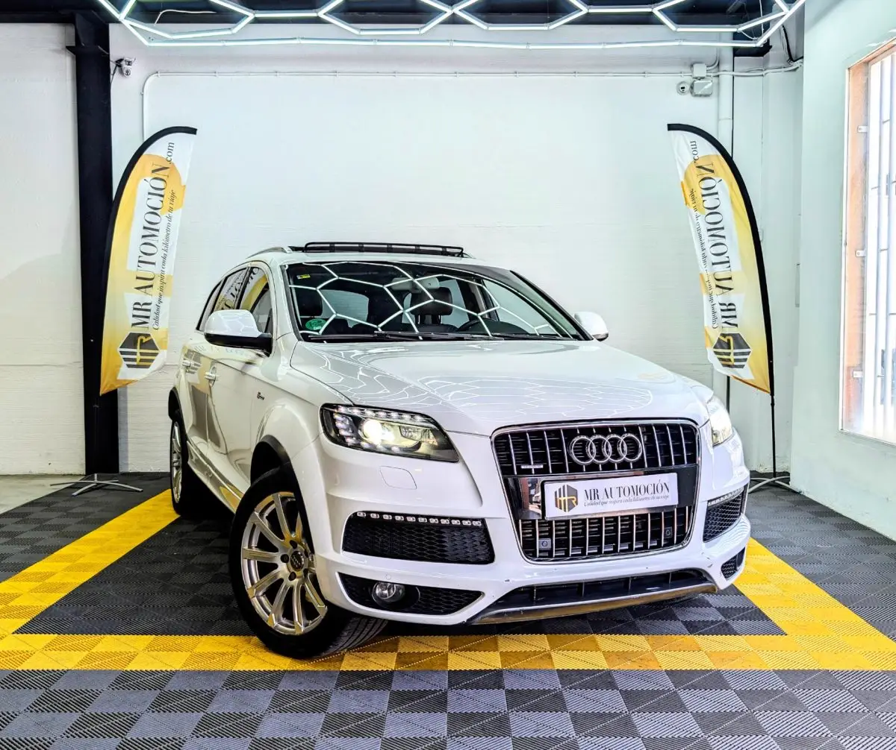

1 / 24Lujo, espacio y un motor de alto rendimiento se unen en este imponente Audi Q7 . Matriculada en 2014 , esta exclusivísima unidad esconde bajo el capó el aclamado motor 3.0 V6 TFSI Supercharged de 333 CV . Gracias a su compresor volumétrico, ofrece una aceleración contundente y progresiva, gestionada a la perfección por su caja de cambios automática Tiptronic de 8 velocidades y la legendaria tracción total quattro .
Con 213.721 km , esta unidad destaca por su altísimo nivel de equipamiento, su codiciada configuración familiar de 7 plazas y por disponer de la Etiqueta Medioambiental C de la DGT. Además, cuenta con suspensión tradicional de muelles, lo que supone una total tranquilidad frente a futuros mantenimientos de sistemas neumáticos.
Estética y Exterior Deportivo Paquete Deportivo S-Line Exterior: Paragolpes, taloneras y logotipos específicos que acentúan su presencia. Color Exterior: Blanco Puro (Pureweiß), elegante y atemporal. Techo Panorámico Open Sky: Un espectacular techo de cristal practicable que inunda de luz las tres filas de asientos.
Llantas de Aleación de 21 Pulgadas: Diseño de radios dobles con neumáticos de altas prestaciones (295/35 R21). Iluminación: Faros de Xenón con luz diurna LED característica de Audi. Barras de techo en aluminio pulido y sensores de aparcamiento delanteros y traseros. Interior de Alta Gama y Confort Habitáculo de 7 Plazas: Versatilidad total con tres filas de asientos para viajar en familia.
Inserciones Decorativas en Madera Noble: Acabados en madera de raíz de nogal brillante en salpicadero, consola central y paneles de las puertas, aportando un toque artesanal y lujoso. Tapicería en Cuero Premium: Asientos en cuero de alta calidad con regulación eléctrica para las plazas delanteras.
Asientos Calefactables: Máximo confort térmico tanto para conductor como para acompañante. Volante Deportivo S-Line: Forrado en cuero perforado, multifunción y con levas integradas. Sistema Keyless (Acceso y Arranque sin llave): Botones de arranque y parada integrados en la consola central.
Climatización de Alto Rendimiento: Sistema automático de 4 zonas con capacidad extra para mantener la temperatura ideal en todo el habitáculo. Tecnología y Seguridad Sistema Multimedia MMI Navigation High: Navegación avanzada y conectividad total. Control de crucero (Tempomat) y sensores de luz y lluvia automáticos.
Tracción integral permanente quattro para una seguridad máxima en cualquier condición. Tu Compra Segura con MR Automoción Te garantizamos total transparencia y calidad en la compra de tu vehículo: ✅ Mantenimiento al Día: Vehículo entregado totalmente revisado. ✅ Kilometraje Certificado: 213.721 km reales y verificados. ✅ Etiqueta C (Verde): Acceso sin restricciones a las Zonas de Bajas Emisiones. ✅ Garantía Completa de 1 Año (12 meses): Para tu total tranquilidad. ✅ Transferencia Incluida: Precio final llave en mano, sin costes ocultos. ✅ Posibilidad de financiación a tu medida con excelentes condiciones.
| Marca | Audi |
|---|---|
| Modelo | AUDI Q7 3.0 TFSI S-Line Supercharged 333CV quattro |
| Año | None 2014 |
| Kilómetros | 213.700 km |
| Combustible | Gasolina |
| Cambio | Automático |
| Potencia | 333 CV |
| Garantía | 1 Año |
| IVA | NO DEDUCIBLE |
Quizá también te encaje